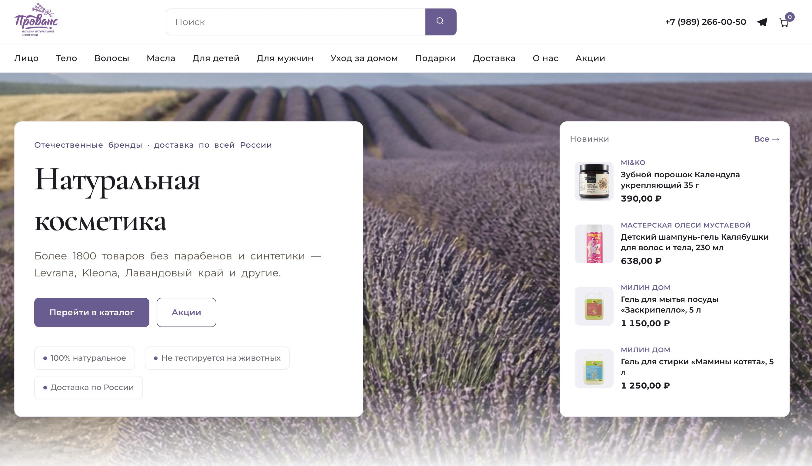
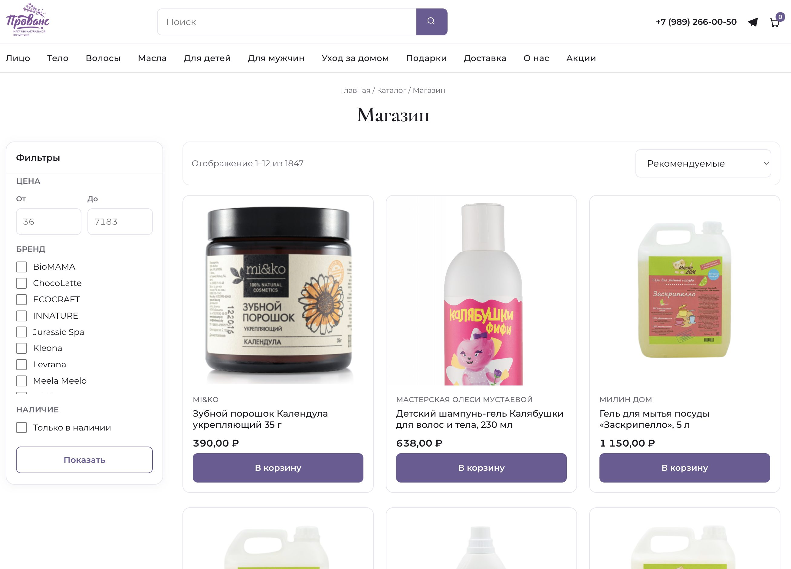
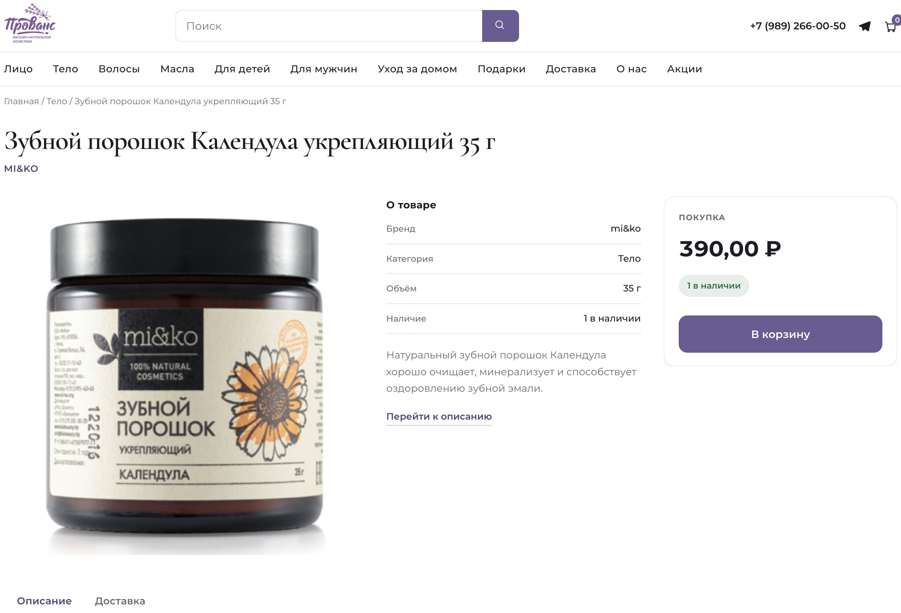

1. Предпосылки и вызов
Изначально интернет-магазин натуральной крымской и французской косметики «Прованс» работал на конструкторе Tilda. По мере роста ассортимента до 2 000 позиций платформа уперлась в жесткие ограничения: высокая стоимость владения, жесткие лимиты на число товаров, невозможность настроить глубокую фильтрацию по свойствам, бренду и объемам, а также медленная загрузка тяжелых страниц каталога.
Главная задача: перенести весь бизнес на независимый стек (WordPress + WooCommerce), сохранив 100% базы товаров, структуру из сотен категорий и накопившийся за годы SEO-трафик без риска получить тысячи страниц с ошибкой 404.
2. Что конкретно было сделано
Парсинг, очистка и миграция данных
- 1 888 товарных позиций: выгрузка каталога с Tilda, парсинг и нормализация данных (наименования, цены, описания, составы, артикулы, привязка галерей фотографий).
- 365 категорий и подкатегорий: воссоздание многоуровневого дерева разделов (от ухода за лицом и волосами до ароматерапии и подарочных наборов).
- Вариативные товары: объединение дублирующихся позиций в вариативные товары с выбором объема (50 мл, 100 мл, 250 мл) и аромата.
SEO-миграция и сохранение позиций в Яндексе и Google
При смене движка полностью изменилась структура URL-адресов. Чтобы не потерять позиции магазина в поисковой выдаче и не сломать внешние ссылки:
- Составлена полная таблица маппинга старых адресов страниц на новые ЧПУ WooCommerce.
- Настроено 90 точечных постоянных редиректов (301 Permanent Redirect) на уровне веб-сервера (
.htaccess), передающих поисковый вес и плавно перенаправляющих покупателей.
Тема витрины и пользовательский опыт
- Оформление в стилистике бренда: светлая лавандовая палитра, адаптивное меню категорий с быстрым доступом к новинкам и акциям.
- Фильтрация каталога: мгновенный подбор средств по ценовому диапазону, бренду производителя и типу кожи/волос.
- Оптимизация скорости: настройка серверного кеширования, сжатие изображений и оптимизация времени первого байта (TTFB) на хостинге SpaceWeb.
3. Витрина магазина

Главная страница: фирменный стиль, навигация по категориям, баннеры акций и витрина новинок.

Каталог товаров: 1 847 активных позиций с фасетной фильтрацией по цене и брендам.

Карточка товара: подробный состав, фотогалерея, отзывы и быстрая корзина.
4. Итоги миграции
Магазин успешно перенесен на автономный хостинг, сняты ограничения по числу товаров, клиент перестал платить ежемесячную абонентскую плату за конструктор, а скорость загрузки каталога увеличилась более чем в 2 раза.